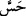
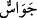

anlamları peşpeşe gerçekleşmiş olur. Cin suresinin sekizinci âyet-i kerimesindeki () “Kuşkusuz biz göğe ulaşmak istedik” ifadesinde de talep anlamı vardır.
Âyet-i kerime () şeklinde () harfi ile de okunmuştur. Bu kelime hissetmek
anlamına gelir ve () kökünden gelir. O da ( ) duyma ve talebin eseri ve gayesidir.
) duyma ve talebin eseri ve gayesidir.
Çünkü iki kelime birbirlerine yakındır. Bu meyanda duygular için () da () da
denilmiştir.
Müfredat’ta şöyle der: ( ) kelimesinin aslı sıhhat ve hastalığa hüküm vermek için
) kelimesinin aslı sıhhat ve hastalığa hüküm vermek için
damara dokunup nabzı ölçmektir. () kökünden “Câsûs” kelimesi türemiştir. Bu kök () kökünden daha husûsîdir. İhya’da da şöyle der: “Tecessese” haberleri araştırmak
demek iken “tehassese” göz ile murakabe etmek demektir. İnsânü’l-uyûn’da ise şöyle
der: () kişinin kendisinin haberleri araştırması için, “tecessese” ise başkaları
vasıtasıyla araştırması için kullanılır. Her ikisi de kullanılmıştır. Tâcü’l-masâdır’da ise
şöyle der: Tecessüs ve tehassüs haber araştırmak demektir. Kâmus’ta ise şöyle der:
“Cesse” ve “tecessese” haberleri araştırmak demektir. “Câsûs” ve kişinin sırdaşı
anlamındaki “cesîs” kelimeleri buradan gelir. “Lâ-tecessesû”nun mânâsı: Zâhir olanı
alın, Allah Teâlâ’nın setrettiğini bırakın. Ya da işlerin bâtınını aşartırmayın. Ya da
kusurları araştırmayın. “Hasûs” mânâ olarak “câsûs” ile aynıdır. Ya da hayır işinde
“hâsûs” şer işinde “câsûs” kullanılır.
Hadiste şöyle buyrulur: “Müminlerin kusurlarının peşine düşmeyin. Kim böyle
yaparsa Allah da onun kusurunun peşine düşer ve evinin içinde de olsa onu rezil
eder.”[202]
Sâib der ki:
Gizli ihânetler/günahlar sonunda rüsvâlığı çeker getirir,
Zira gece hırsızlık yapanı gündüz polis pazarda yakalar.
Cebrâil (a.s.)’ın şöyle dediği rivayet olunur: Yâ Muhammed! Eğer bizim ibadetimiz
yeryüzünde olsaydı üç hasleti yapardık: Müslümanlara su vermek, âilesi olanlara
yardım etmek ve Müslümanların günahlarını örtmek.
Zeyd b. Vehb’den naklolunduğuna göre şöyle demiştir: İbn Mes’ûd’a, Velid b. Ukbe
b. Ebî Muayt hakkında sende bir şey var mı? -yani onun hakkında ne dersin- sakalından
şarap damlıyormuş! İbn Mes’ûd (r.a.) da: ‘Biz tecessüsten nehyolunduk. Eğer bir şey
görürsek gördüğümüz şeyden dolayı onu cezâlandırırız.’ şeklinde cevap vermiştir.
Hadis-i şerifte şöyle buyrulur: “Allah’ım kusurlarımızı ört, korkularımızdan bizi
emin kıl!” Hadiste geçen “avret” kelimesi, insanın utanç duyduğu hata ve kusurları
anlamındadır.
el-Makâsıdü’l-hasene’de der ki: Hadis-i şerifte şöyle buyrulur: “Allah’ım mekrinden
bizi emin kılma, zikrini unutturma, setrini bizden kaldırma, bizi gafillerden eyleme!”
Yine Efendimiz (s.a.) şöyle buyurur: “Kim uyurken bu duâyı yaparsa Allah Teâlâ en